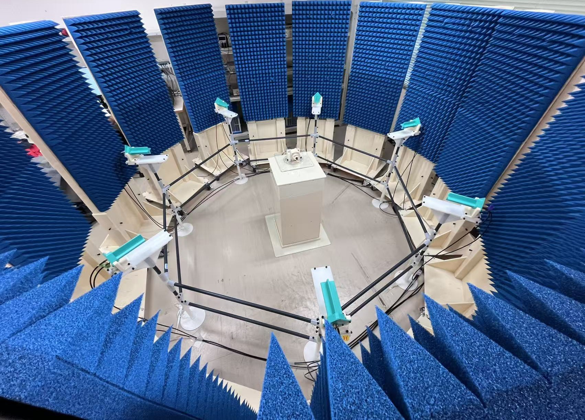
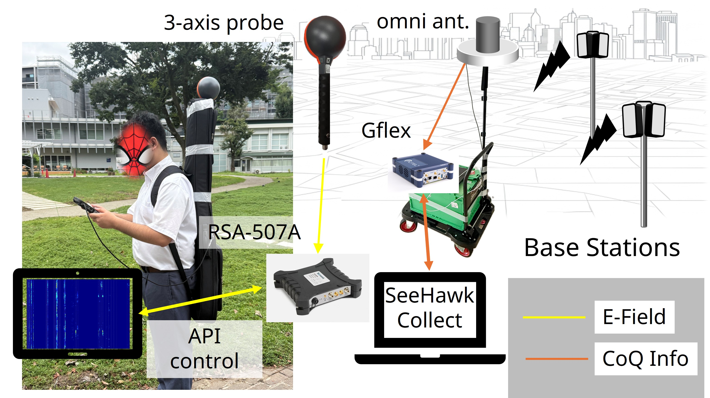
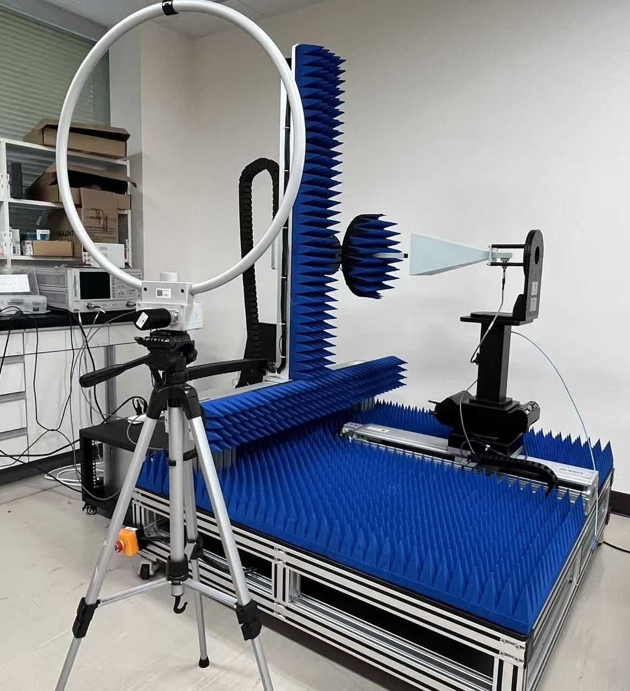

Welcome
Welcome to the Smart Body-Centric Wireless Communications Laboratory at the Advanced Wireless and Communication Center (AWCC), The University of Electro-Communications (UEC), Tokyo, Japan.
In our group, we are aiming at bridging the gap between ultra-high-speed wireless connectivity and human-centric electromagnetic safety in the 5G-Advanced/6G era, driven by two synergetic pillars:
-
Advanced Wireless Communications Focusing on next-generation networks (5G/6G, Cell-Free Massive MIMO), we specialize in antenna system design, and MIMO-OTA testing. We also explore channel modeling, Communication EMC, and LF/UHF signal evaluations for industrial environments.
-
RF-EMF Safety & System Co-Design Integrating traditional bioelectromagnetics with system-level design, we utilize Sionna Ray Tracing and PHY/MAC simulations for EMF-aware network optimization. We tackle the coexistence of high data traffic and EMF compliance in multi-BS scenarios, while evaluating wearable/implantable devices for biomedical applications.
We welcome motivated students and researchers. See our Openings page for available positions.
News
2026/10/28
Conference
Zhou (M2) presented at ISAP 2026 (Chengdu).
Topics: SDR-Based OTA Testing for BER Evaluation Using USRP and a 2-D Spatial Fading Emulator.
2026/10/20
Conference
Oda (M2) presented at MICT Workshop @ Tokyo.
Topics: A study on Quiet-Zone Formation for Phantom-Free BAN-OTA Evaluation.
2026/09/23
Conference
Utsushigawa (M2) and Goto (M1) presented at IEICE Society Conference (Hokkaido).
Topics: A Study on Spatial Downsampling Method for Large-Scale EMF Distribution Assessment,
and Field Reconstruction Technique on Biological Surfaces for Power Density Assessment in the FR3 Band.
2026/08/19
Conference
Ueda (M2) and Tanaka (M1) presented at URSI GASS 2026 (Kraków).
Topics: Estimation of Absorbed Power Density at 7 GHz via PWS-based Inverse Reconstruction,
and A Study on RF-EMF Assessment of 5G Shared Base Stations in Subway Tunnels Using Ray-Tracing Simulation.
2026/08/12
Conference
Oda and Enomoto (M2) presented at APWCS 2026 (Seoul).
Topics: Numerical Assessment of Quiet-Zone Formation in a Phantom-Free BAN-OTA Fading Emulator Using Vivaldi Scatterer Antennas,
and EMF Compliance Boundary Assessment Based on Near-Field Power Density for Airy Beam Antennas.
2026/08/08
Journal
Paper accepted in IEEE Transactions on Electromagnetic Compatibility:
A Comprehensive Electromagnetic and Thermal Modeling Framework for Highly Focused Millimeter-Wave Beam Exposure on Rat Dorsal Skin.
[DOI]
2026/07/16
Conference
Enomoto (M2) presented at EMCJ Workshop @ Tokyo.
Topic: EMF Compliance Boundary Assessment Based on Near-Field Power Density for Airy Beam Antennas.
2026/06/22
Conference
Goto (M1) presented at BioEM 2026 (Cairns).
Topic: Field Reconstruction for Power Density Assessment on Curved Surfaces for EMF Exposure in the FR3 Band.
2026/06/01
Conference
Sakai (M1) presented at MICT Workshop @ Yokosuka Research Park (YRP).
Topic: Posture change estimation in indoor NLOS environments for elderly fall monitoring.
2026/04/22
Conference
Xu and Li (D1) presented at EuCAP 2026 (Dublin).
Topics: Sionna ray-tracing-driven RF-EMF analysis in FR3 mmWave LOS scenarios,
and RF-EMF / EIRP trade-off in 6G handset multi-antenna systems at FR1 and FR3 bands.
2026/03/13
Conference
Sakai (B4) presented at IEICE General Conference @ Kyushu Sangyo University.
Topic: A study on the verification of room electromagnetics theory for elderly fall monitoring.
2026/03/06
Conference
Xu (D1) presented at RCS Workshop @ Tokyo University of Science.
Topic: Precoding optimization for FR3 downlink considering RF-EMF exposure based on Sionna ray-tracing.
2025/12/24
Journal
Paper accepted in IEICE Transactions C:
Dosimetry estimation of 60 GHz millimeter-wave exposure for thermal physiological threshold evaluation.
2025/12/16
Journal
Paper accepted in Physics in Medicine and Biology:
Intercomparisons of computed epithelial/absorbed power density and temperature rise in anatomical human face models under localized exposures at 10 GHz and 30 GHz.
[DOI]
2025/11/26
Conference
Utsukawa, Ueda, and Zhou (M1) presented at ICETC 2025 (Osaka).
Topics: Weibull distribution-based MMW skin temperature approximation,
averaging of absorbed power density for forearm skin exposure,
and BER enhancement under SAR constraints for implanted biomedical telemetry.
2025/11/01
Journal
Paper accepted in IEEE Journal of Microwaves:
Model Variability in Assessment of Human Exposure to Radio-Frequency Fields.
[DOI]
2025/10/30
Conference
Oda (M1) presented at ISAP 2025 (Fukuoka).
Topic: Over-the-Air testing of BAN diversity antennas in 4G downlink frequency band.
2025/09/02
Conference
Ueda (M1) presented at the 17th Bioelectromagnetics Symposium @ NICT Nihonbashi.
Topic: Weibull distribution application and accuracy evaluation for thermal response estimation in MMW exposure.
2025/08/21
Conference
Utsukawa and Ueda (M1) presented at AP-RASC 2025 (Sydney).
Topics: LF-band underground wireless communication characterization using PCA,
and ML-based thermal parameter estimation in MMW exposure.